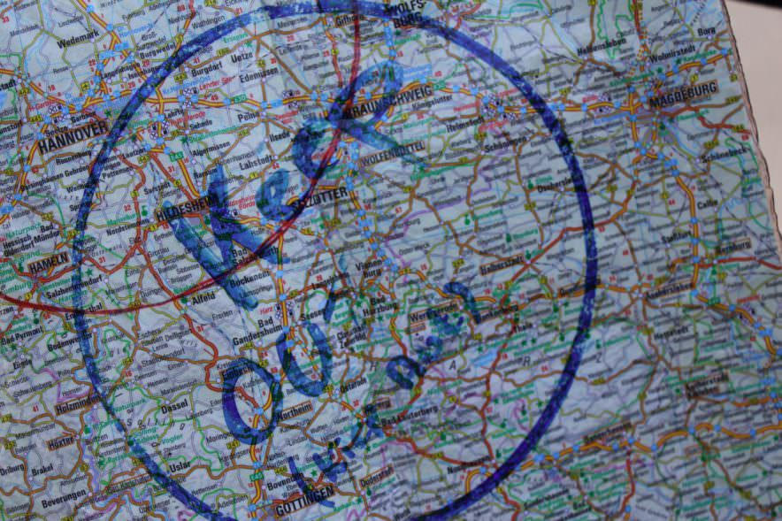

Fixe Tippelee!
So wünscht man sik enen goden Weg! Tominnst doot junge Gesellen op Wannerschapp dat so. Dree Jahr un een Dag lang duert die Reis ok för Mario. Bummelig een Jahr dorvun hett he rüm. Dor gifft dat al wat to vertellen:
„Mi gefallt an de wannernen Kameraden sunnerlig goot, dat se so graadut sünd. Dor warrt nich lang rümsnackt achter´n Rüch. Man seggt sik direktemang forts in´t Gesicht wat man över den annern denken deit.“
Klare Spraak. Dat liggt Mario. Siet goot een Johr is he ünnerwegens.
Mario Greive is Rolandsbroder. Bremer Muerlüüd hebbt düsse Broderschapp in`t Jahr 1891 gründt. Apen is se aver för al Bauberufe. Mario is Timmermann. Sien dree Lehrjahren liggt achter em. Mit Stenz, dat is sien Stab un den Charlie, dat is sien Dook, wo he sien söven Saken inwickelt hett, is he ünnerwegens. Em weer fröh klaar, dat he op Waltz gahn wull.
„Narnswo lehrt man sünst so veel“, meent he. Dat spaansche Timmerlüüt anners arbeiten doot as jümehr däänschen Kollegen, dat weer em woll klaar. Aver sülvens vun Region to Region warrd jümmers wat anners baut. Man lehrt jümmers wat dorto. Geiht gar nich anners. Dree Maanden in Dänemark liggt graad achter em. Däänsch hett Mario dorbi nich lehrt. Se hebbt sik ok so verstahn. Mario kann veel un blangen de Handgrepen vun sien Beruf hett he jo ok noch Hänn un Fööt un en paar Brocken Engelsch.
Dat reckt. Dormit kümmt he dörch.
Wenn man ´n Wannergesellen süht, kann man an de Farv vun de Kluft erkennen, wat sien Beruf is. Mario sien Kluft is swatt. Dat kümmt noch ut de Tiet, as Timmerlüüd Särge baut un to Graff dragen hebbt. Se weren sotoseggen alltiet klaar för den Karkhoff.
De Gesellen mit en hellen Kluft sünd ut en „Steenberuf“ – also Muerlüüd, Betonbauer oder vellicht Steenmetz.
Al hebbt se enen Hoot op den Kopp. De warrt ok nich afsett – nich eenmaal to´n Gröten.
Utnahmen is blots dat Bett in de Nacht, de Dusche oder de Köök. Dor warrt he afnahmen: ut Respekt dorför, dat man wat to eten kriegen deit.
Sünst blifft je jümmers dor, wo he henhören deit: op ´n Kopp.
De Hoot is vun groten Wert. He is dat Teken, dat man free is. In fröher Tiden dörfen blots de Adeligen enen Hoot drägen. De Handwarkers hebbt stolt natrocken.
En Rolandsbroder is goot an sien „blaue Ehrbarkeit“ to kennen. Dat is de blaue Schlips. Jeedeen Broderschapp hett ehr egen Teken. De Wannergesellen weet al vun wieden, wat för en Broder op se tokomen deit. Veel is ok bi all liek. An´t Jackett sünd op jeedeen Siet dree Knööp. De enen staht för de Lehrjahr, de anneren för de Wannerjahr. De West hett Knööp ut Perlmutt. De Z-Stich hoolt se an de rechte Steed. Dat sünd 8 Stück. Se staht för de Tahl vun de Stünnen, de jeedeen Dag arbeit warrt.
Timmerlüüd hebbt fröher ok in´n Bootsbau arbeit. Dorüm hebbt se an de Büx twee Rietverschlüsse. Wenn en Timmermann bi de Arbeit in`t Water plumpst is, hett em de sware Büx na ünnen trocken. Mit de twee Rietverschlüsse kunn se beter apenmaakt un daaltrocken warrn.
De brede Slag vun de Büx hoolt Sägespäne af.
De dree Wannerjahr sünd nich blots Zuckerslicken. De Gesellen op Reis hebbt ünnereenanner engen Kuntakt – ok ahn Internet un Handy.
Se vertellt sik, wo se henwannern doot. Dörch Mundpropaganda weet jeder vun jeden. Se verpasst sik nienich. Bummelig 500 junge Lüüd sünd to Tiet op düsse Reis. Dorvun sünd blots bummelig 10 Perzent Fruunslüüd. Se warrt ok mit „Kamerad“ ansnackt. So as all echte Keerls eben…
Fruunslüüd sünd noch nich lang op Wannerschapp. Liekers warrt se goot annahmen. Se all vertellt sik gegensiedig:
Welke Meister is goot? Welke nich? Hett man Tariflohn kregen? Geev dat goot to eten? Is de Gesell liek – so as all de annern ok – behannelt worden? Hett he en Bett kregen? Dat sünd wichtige Fragen för Heimatlose. Dat sünd de Wannergesellen nämlich för dree Jahr un een Dag. Dat snackt sik gau rüm, wenn en Rolandsbroder sik sülvensstännig maakt hett. De kennt sik mit dat Leven ut. De weet, wat de reisende Broder nödig hett. Dor kümmt man geern ünner.

De sik op den Weg maken wüll, mütt sik eerst enen Gesellen söken, de düsse Reis al achter sik hett. De föhrt den tokamen Wannersmann in. Dat is ok brutaal, denn toeerst warrt de niege Bursch „nagelt“. So nennt man dat. En olen Nagel warrt dorto dörch dat Ohrläppchen haut, dormit dor de Ohrring Platz kriggt.
Düssen Nagel nimmt de niege Gesell mit op de Reis. Wenn sien Tiet vörbie is, dörf he ok en niegen Gesellen mit op den Weg bringen. De Statuten vun de Broderschapp, dat Reglemang för dat Verhalen warrt vör de Reis butenkopps lehrt. Dat gifft nix op Papeer un keen digitalen Gedächtnisstütt. Digitaal funkschoneren mütt in düssen Fall de Brägen. Mario hett dormit keen Probleem.


Wenn sik en Gesell op sien Wannderschapp wat to Schulden kamen lätt, denn is de Straaf simpel: De Ohrring warrt utreten. So is he sien Leevdag as Schlitzohr tekend. Dat is düütlich en Schann! Aver över de snackt man an`n besten gar nich, meent Mario. Een Schlitzohr kann man heel eenfach warrn. Dat reckt al, in de Bannmiel to kamen. In de Jahren vun de Wannerschapp mütt sik jeedeen Gesell na all Sieden sösstig Kilometer vun sien Tohuus weghalen. Schummeln geiht nich. De Handwarkers op Reis kaamt sik in de Mööt. Se weet vuneenanner. Se laat sik ok geern maal de Koort vun den annern wiesen. Düsse Düütschlandkoort gifft dat mit op´n Weg, wenn de Reis losgeiht. De Bannmiel is dor dick intekent – dor gifft dat keen Verdoon.
Dat gifft ´n Spruch, den mütt he opseggen, wenn he bi en niegen Meister ünnerkamen wüll. Wat dat för en Spruch is, dat seggt he mi nich. De Grund is eenfach: „Du büst keen Meister!“, seggt he to mi.
Mario is froh, dat ik em en Stück in mien Auto mitnehmen do. Bus un Bahn sünd verpöönt. Wenn he mal keen Bett finnen deit, is dat tominnst in´n Summer keen Problem. Denn warrt eben in dat „Dusend-Steerns-Hotel“ slapen. En Nacht an´n Stratenrand kann wunnerschöön sien, meent Mario. Bi leeg Wedder un in de düstere Jahrestiet süht dat anners ut. Dor mütt al mal de Vörruum vun en Bank goot noog sien. En Wannergesell is jümmers dankbaar för en Bett.
Blots utnutzen schull keeneen den Handwarker ünner dat egen Dack. Wenn vellicht mal en Stohl wackeln deit oder wat Lüttes heel maakt warrn mütt, denn gellt al mal dat Prinzip Hand gegen Koje.
Aver dat dörf nich to veel Arbeit warrn – oder se mööt na Tarif betahlt warrn. En Gesell mütt in de Wannertiet verdenen. He mütt de Gewarkschaft betahlen. He hett faste Kosten. Un he hett wenig Geld. Bobento wüll he de Handwarkers vör Ort nich de Arbeit wegnehmen. Dat höört sik nich.
Mario hett nu keen Tiet mehr to´n Klönen. He wüll wieder. An´n besten is dat, wenn man sik nix vörnehmen un eenfach in den Dag leven deit. Dat sünd de besten Dagen. Op alle Fälle sünd se nich stressig. Un dat is jo ok wat, wat man för dat Leven lehren deit: mehr gelaten sien! Na denn: „Fixe Tippelee, Mario!“
Text, Biller un Fragen: Christianne Nölting
Fragen to´n Text:
Wat maakt den Wannersmann ut?
Hier sünd ok Handwarker in en swatten Kluft togangen! Kiek Di de Biller an. Vertell en lütt Geschicht dorto!
Kiek Di dat letzt Bild nipp un nau an. Denk Di en Elfchen dorto ut un schriev dat op!
En Elfchen hett nix mit „Elfen“ oder „sööt“ un „Kinnerkraam“ to doon. En Elfchen is blots en lütt Gedicht mit ölven Wöör.
Dat geiht so:
Reeg 1 mit 1 Woort: De eerste Indruck oder en Farv oder Form
Reeg 2 mit 2 Wöör: Twee Adjektive, Verben, Substantive
Reeg 3 mit 3 Wöör: Wo is dat?
Reeg 4 mit 4 Wöör: Wat fallt Di noch op oder in?
Reeg 5 mit 1 Woort: Dien Woort to´n Enn.
Biespeel:
hoch
oppassen, Handarbeit
boben op´t Dack
se köönt wat Dulles
Dackdecker


{kind=link}
{kind=link}
{kind=link}
{kind=link}
{kind=link}
{kind=link}
{kind=link}
{kind=link}
{kind=link}
{kind=link}
{kind=link}
Schreibe einen Kommentar